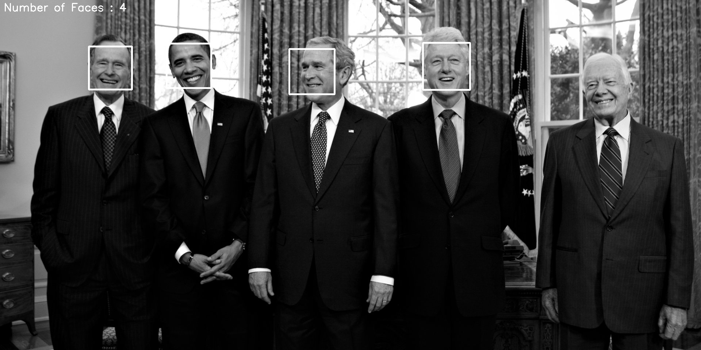
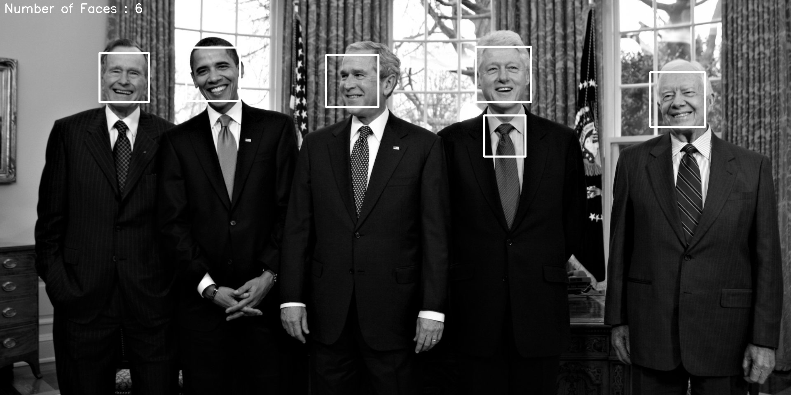

Here is how to count number of faces in an image using cv2 – python image library. This was done in Spyder (Python 3.7) using anaconda. Make sure cv2 is installed in the environment.
We will be using the haar cascades classifier to detect faces in an image. You will need the .xml files for this work if you are trying on your machine. Link to download the files in the reference section. Replace the files path to suit your file system path.
1. import cv2
2. import matplotlib.pyplot as plt
3. font = cv2.FONT_HERSHEY_SIMPLEX
4. cascPath1 = '/data/haarcascades/haarcascade_frontalface_default.xml'
5. cascPath2 = '/data/haarcascades/haarcascade_frontalface_alt2.xml'
6. cascPath3 = '/data/haarcascades/haarcascade_frontalface_alt_tree.xml'
7. cascPath4 = '/data/haarcascades/haarcascade_frontalface_alt.xml'
# assign the Cascade Classifier
8. faceCascade = cv2.CascadeClassifier(cascPath4)
#assign the image
9. image_name = "U_S_presidents.jpg"
# Load the image and convert to grayscale
10. gray = cv2.imread(image_name, 0)
11. plt.figure(figsize=(12,8))
12. plt.imshow(gray, cmap='gray')
13. plt.show()
# Detect faces
14. faces = faceCascade.detectMultiScale(
15. gray, scaleFactor=1.2, minNeighbors=5, flags=cv2.CASCADE_SCALE_IMAGE)
# For each face
16. for (x, y, w, h) in faces:
17. # Draw rectangle around the face
18. cv2.rectangle(gray, (x, y), (x+w, y+h), (255, 0, 0), 3)
#display the image
19. plt.figure(figsize=(12,8))
20. cv2.putText(gray,'Number of Faces : ' + str(len(faces)),(10, 30), font, 1,(255,255,255),2)
21. plt.imshow(gray, cmap='gray')
22. plt.show()
#save the image
23. cv2.imwrite('/Documents/Python_Scripts/' + 'gray_' + image_name, gray)
The process is simple. First- load the image then convert to grayscale. Grayscale basically turns each pixel into a number between 0 and 255.
Here is quick tutorial on how the classifier works.
Lines 4-7 lists different types of CascadeClassifiers related to recognizing frontal face.
Line 8 initializes the classifier we want to use.
Line 9 loads the image.
Line 10 -13 loads the image and converts to grayscale.
Line 14 and 15 goes through entire image and detects the faces. Here, we can tune the scaleFactor, MinNeighbors and flag parameters.
You can add additional parameters as well - see the
documentation.
minNeighbors – Parameter specifying how many neighbors each candidate rectangle should have to retain it.
minNeighbors – Parameter specifying how many neighbors each candidate rectangle should have to retain it.
flags – Parameter with the same meaning for an old cascade as in the function cvHaarDetectObjects.
Line 16-18 draws a rectangle around the faces.
Lines 19-22, places a text on the top left corner with number of rectangles that it found in the image and then displays the image.
Line 23 saves the image

Here is the resulting image after changing the parameter scaleFactor = 1.1
